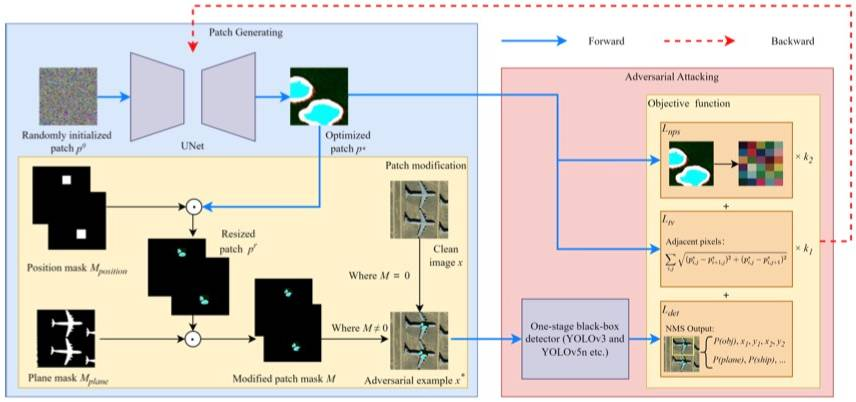
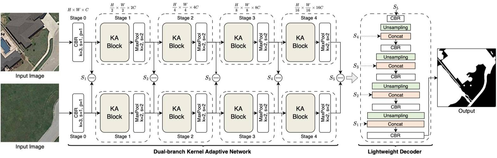
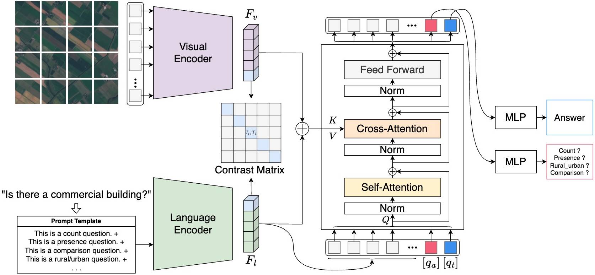
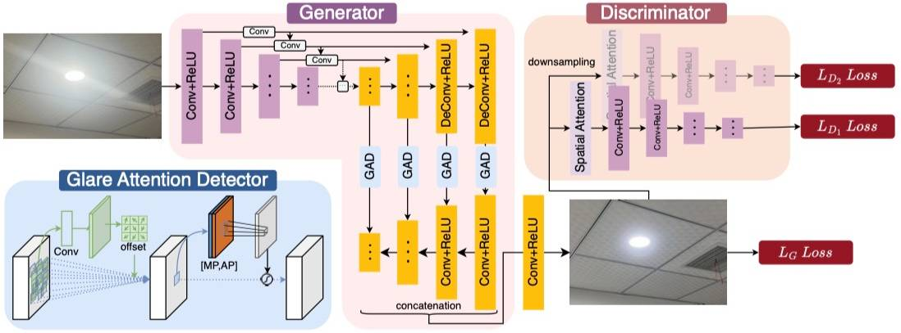
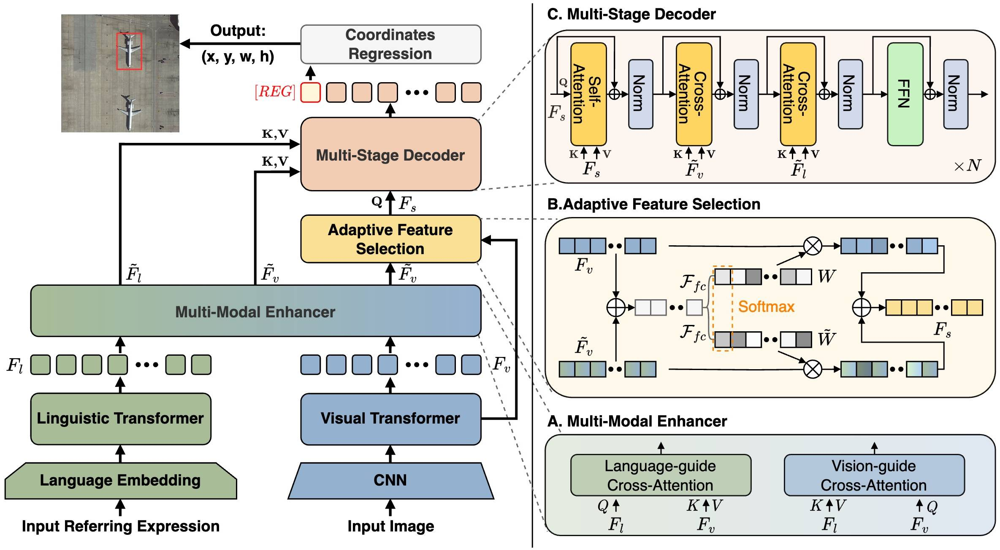
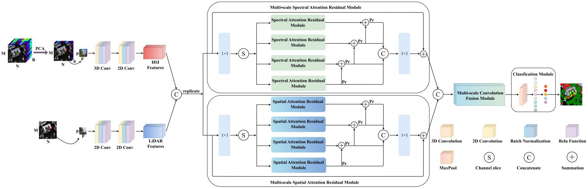
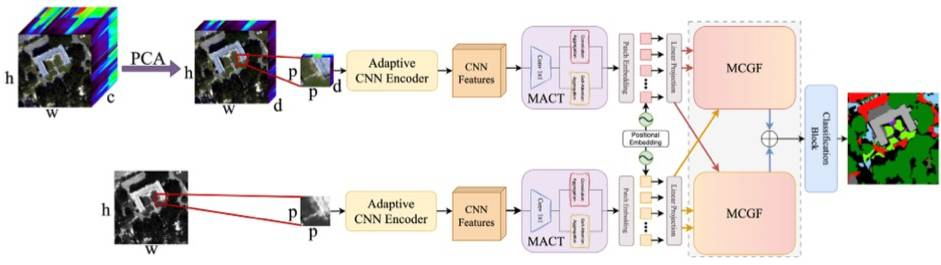

Ke Li(李柯-西安电子科技大学) |
News
- [12, 2024] 1 papers accepted to
AAAI 2025 . - [11, 2024] 1 papers accepted to
IEEE TIFS . - [08, 2024] 1 papers accepted to
NN . - [07, 2024] Several papers accepted, 1
IEEE TGRS , 1PR , 3IGARSS 2024 . - [06, 2024] 1 papers accepted to
CVPR 2024 . - [04, 2024] 1 papers accepted to
IEEE GRSL . - [03, 2024] 1 papers accepted to
IEEE JSTARS . - [02, 2024] 1 papers accepted to
ESWA . - [08, 2023] 1 papers accepted to
IEEE TGRS . - [06, 2023] 1 papers accepted to
BSPC .
Research Interest
I am working in Remote Sensing; Deep learning; Computer Vision; Multi-Modal Representation. Currently, I focus on the following research topics:- Multi-Modal Remote Sensing Imagery Interpretation
- Remote Sensing Object Detection
- Muti-Source Fusion
Publications
Conferences:
|
[6] FD2-Net: Frequency-Driven Feature Decomposition Network for Infrared-Visible Object Detection
Ke Li, Di Wang, Zhangyuan Hu, Shaofeng Li, Weiping Ni, Lin Zhao, Quan Wang The 39th Annual AAAI Conference on Artificial Intelligence (AAAI), 2025. (CCF-A) [Paper][Code] |
 |
[5] Show Me What and Where has Changed? Question Answering and Grounding for Remote Sensing Change Detection
Ke Li, Fuyu Dong, Di Wang, Shaofeng Li, Quan Wang, Xinbo Gao, Tat-Seng Chua arXiv preprint arXiv, 2024. [Project Page][Paper][Dataset and Code] |
|  |
[4] Transferable Physical Adversarial Patch Attacks for Remote Sensing Object Detection
Di Wang, Wenxuan Zhu, Ke Li, Xiao Gao, Pengfei Yang Proceeding of the IEEE International Geoscience and Remote Sensing Symposium (IGARSS 2024), 2024. (EI) [Paper] |
|  |
[3] Kernel-Adaptive Change Detection Network in Remote Sensing Imagery
Di Wang , Fuyu Dong, Ke Li, and Duo Chen Proceeding of the IEEE International Geoscience and Remote Sensing Symposium (IGARSS 2024), 2024. (EI) [Paper] |
|  |
[2] Alignment and Multimodal Reasoning for Remote Sensing Visual Question Answering
Yumin Tian, Haojie Xu, Di Wang, Ke Li, and Lin Zhao Proceeding of the IEEE International Geoscience and Remote Sensing Symposium (IGARSS 2024), 2024. (EI) [Paper] |
|
[1] Unleashing Channel Potential: Space-Frequency Selection Convolution for SAR Object Detection
Ke Li, Di Wang, Zhangyuan Hu, Wenxuan Zhu, Shaofeng Li, Quan Wang IEEE/CVF Conference on Computer Vision and Pattern Recognition (CVPR), 2024. (CCF-A) [Paper][Code][Poster] |
{kind=link}
Journals:
|
[9] Physical Adversarial Patch Attack for Optical Fine-grained Aircraft Recognition
Ke Li, Di Wang, Wenxuan Zhu, Shaofeng Li, Quan Wang, Xinbo Gao IEEE Transactions on Information Forensics and Security (TIFS), 2024. (CCF-A, SCI Q1 TOP, IF=6.3) [Paper][Code] |
|
[8] DiagSWin: A Multi-Scale Vision Transformer with Diagonal-Shaped Windows for Object Detection and Segmentation
Ke Li, Di Wang, Gang Liu, Wenxuan Zhu, Haodi Zhong, Quan Wang Neural Networks (NN), 2024. (SCI Q1 TOP, IF=6.0) [Paper] |
|  |
[7] GR-GAN: A Unified Adversarial Framework for Single Image Glare Removal and Denoising
Cong Niu, Ke Li, Di Wang, Wenxuan Zhu, Haojie Xu, Jinhui Dong Pattern Recognition (PR), 2024. (SCI Q1 TOP, IF=7.5) [Paper][Code] |
 |
[6] Language-Guided Progressive Attention for Visual Grounding in Remote Sensing Images
Ke Li, Di Wang, Haojie Xu, Haodi Zhong, Cong Wang IEEE Transactions on Geoscience and Remote Sensing (TGRS), 2024. (SCI Q1, IF=7.5) [Paper][Dataset and Code] |
 |
[5] Multi-Object Behavior Recognition based on Object Detection for Dense Crowds
Min Dang, Gang Liu, Qijie Xu, Ke Li, Di Wang, Lihuo He Expert Systems with Applications (ESWA), 2024. (SCI Q1 TOP, IF=8.5) [Paper] |
|  |
[4] Visual Selection and Multistage Reasoning for RSVG
Yueli Ding, Haojie Xu, Di Wang, Ke Li, Yumin Tian IEEE Geoscience and Remote Sensing Letters (GRSL), 2024. (SCI Q2, IF=4.8) [Paper] |
|  |
[3] Multi-Scale Spectral-Spatial Attention Residual Fusion Network for Multi-Source Remote Sensing Data Classification
Xu Wang, Gang Liu, Ke Li, Min Dang, Di Wang, Zili Wu, Rong Pan IEEE Journal of Selected Topics in Applied Earth Observations and Remote Sensing (JSTARS), 2024. (SCI Q2 TOP, IF=5.5) [Paper] |
|
[2] Zero-Watermark Scheme for Medical Image Pprotection based on Style Feature and ResNet
Ruotong Xiang, Gang Liu, Ke Li, Jing Liu, Ziyi Zhang, Min Dang Biomedical Signal Processing and Control (BSPC), 2023. (SCI Q2, IF=5.1) [Paper] |
|  |
[1] Mixing Self-Attention and Convolution: A Unified Framework for Multisource Remote Sensing Data Classification
Ke Li, Di Wang, Xu Wang, Gang Liu, Zili Wu, Quan Wang IEEE Transactions on Geoscience and Remote Sensing (TGRS), 2023. (SCI Q1 TOP, IF=8.2) [Paper][Code] |
Membership
- Computer Vision Foundation (CVF), Student Member
- IEEE Geoscience and Remote Sensing Society (GRSS), Student Member
- IEEE, Student Member
Journal/Conference Reviewer
- IEEE Transactions on Geoscience and Remote Sensing (TGRS)
- The Thirteenth International Conference on Learning Representations (ICLR 2025)
- IEEE Transactions on Circuits and Systems for Video Technology (TCSVT)
- Biomedical Signal Processing and Control (BSPC)
Awards
- 2024.05, First Prize of Academic Scholarship, Xidian University | 西安电子科技大学 学业奖学金一等奖
- 2023.12, Tencent Scholarship, Xidian University | 西安电子科技大学 腾讯奖学金
- 2023.05, Second Prize of Academic Scholarship, Xidian University | 西安电子科技大学 学业奖学金二等奖
- ...
Conference Experience
- 2024年6月16-22日, 赴美国西雅图参加第四十一届国际计算机视觉与模式识别会议, CVPR 2024
- 2024年5月5-7日, 赴重庆参加第十四届视觉与学习青年学者研讨会, VALSE 2024
- 2023年12月28-31日, 赴广州参加第十九届中国图像图形学学会青年科学家会议, 2023
- 2023年10月13-15日, 赴厦门参加第六届中国模式识别与计算机视觉大会, PRCV 2023